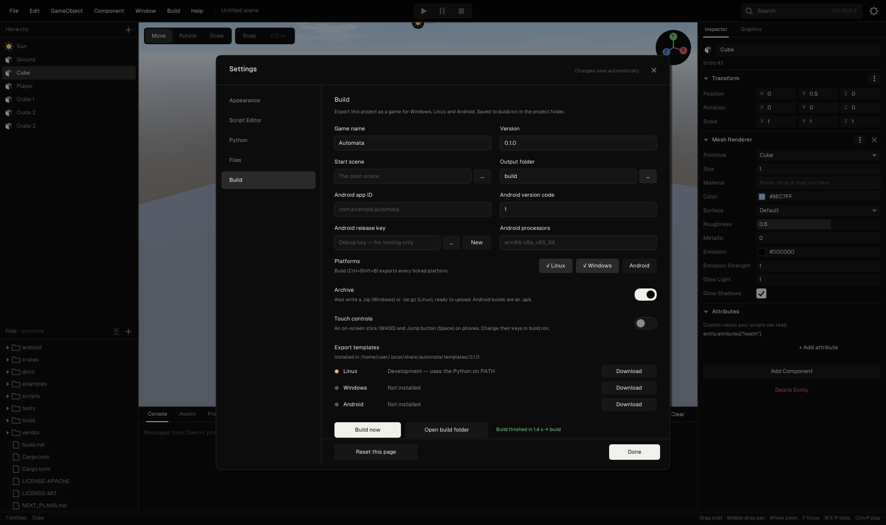

Exporting your game
An export turns your project into a game other people can run. They don't need Oberon, Rust or Python installed. AUTOMATA exports to Windows and Linux (64-bit). Android is coming: Coin Run already runs on an Android emulator in CI.
Each export is a folder you can zip and share. You can also turn on
Archive to get a ready-made .zip (Windows) or .tar.gz (Linux).
build/
windows/Coin Run/
Coin Run.exe ← players double-click this
game/ ← your scenes, scripts and assets
runtime/ ← a private Python with the engine inside
linux/Coin Run/
Coin Run
game/
runtime/
Coin Run-0.1.0-windows-x86_64.zip
Coin Run-0.1.0-linux-x86_64.tar.gzBuild from Oberon#
- Save your scene into the project folder (Ctrl+S).
- Open Build ▸ Build Settings…. Set the game name and version, and pick the platforms.
- Press Build now, or Ctrl+Shift+B anywhere in the editor.

The build runs in the background, so you can keep working while it runs. Its progress appears in the status bar and the Console. If anything fails, the Console opens and lists every problem: a missing script, a scene that won't load, or a missing template. Open build folder shows the result in your file manager.
| Setting | What it does |
|---|---|
| Game name | Window title, executable name and folder name |
| Version | Used in archive names, e.g. Coin Run-0.1.0-linux-x86_64.zip |
| Start scene | The scene the game opens. If empty, the build uses the scene open in Oberon. |
| Output folder | Where builds go, relative to the project (build) |
| Platforms | What Build / Ctrl+Shift+B exports. Build ▸ Build for Linux / Windows exports just one. |
| Archive | Also write a .zip / .tar.gz of each build |
| Touch controls | An on-screen stick and buttons that hold the game's keys on touch screens. Turning it on writes a stick for WASD and a Jump button for Space; change them in build.ron (Touch controls) |
Settings are saved to build.ron in the project folder, so commit it with
your project. Each build leaves out .oberon/, __pycache__/, version
control folders, virtual environments (under any name) and installed
packages (site-packages/), the output folder and tests/. To
leave out more, add paths to exclude in build.ron. A trailing /
means a folder:
BuildConfig(
name: "Coin Run",
version: "1.0.0",
start_scene: Some("level.ron"),
targets: [Linux, Windows],
archive: true,
exclude: ["tests/", "art/source/"],
)Export templates#
An export doesn't compile anything. It copies a prebuilt export template (the game launcher plus a private Python with the engine installed), then adds your project. That's why a build takes seconds, and why you can export for Windows from Linux and the other way round.
Templates are downloaded once per engine version. Build fetches a missing template by itself, or you can use Build ▸ Download Export Templates or the Download buttons on the Build page. The Linux template is about 75 MB and the Windows one about 25 MB.
While the repository is private, the plain download link needs you to be
signed in. Oberon and automata-cli try these in order:
- the public release link;
- the GitHub CLI, if you've signed in with
gh auth login; - a token in
GH_TOKENorGITHUB_TOKEN(it needs read access to the repository).
If none of them works and you run Oberon from a source checkout
(cargo run -p oberon), Build compiles automata-player with cargo and
uses it as a Development template for your own platform.
The Build page shows each template's state:
- Ready: the game ships its own Python. This is what you give to players.
- Development: the game uses the Python on
PATH, which must haveautomatainstalled. Oberon sets one up automatically when you run a source checkout and no template is installed yet. It's fine for testing on your own machine, but don't ship it. - Not installed: Build downloads it the first time you build for that platform.
Templates live in ~/.local/share/automata/templates/<version>/ on Linux
and %APPDATA%\automata\templates\<version>\ on Windows. You can choose
another folder by setting AUTOMATA_TEMPLATES.
Build from the command line#
The same exporter is available as automata-cli, the AUTOMATA command
line (it was called automata-export before). Use it in CI, or for
code-first games that don't use Oberon:
cargo build --release -p automata-cli
automata-cli templates download # once per engine version
automata-cli init my_game --scene level.ron # writes build.ron
automata-cli check my_game # validate without building
automata-cli stage my_game --out staged/ # just the game folder
automata-cli build my_game --target all # or linux / windowsA code-first game, written in Python with at.Game and no scene file,
starts from a script instead of a scene:
automata-cli init my_game --main main.pyThe exported game runs main.py exactly like python main.py would,
with the game folder as the working directory. Load files with paths
relative to that folder.
stage writes only the game folder a build would ship: your files minus
the ones left out, plus game.json. It doesn't need a template. Use it to
look at what gets shipped, or to package the game yourself. The Android
build in the repository uses it (Android export is still in progress).
Running an exported game#
Players start the executable. It also accepts two flags, which help with smoke tests in CI:
| Flag | Effect |
|---|---|
--headless | Run without a window |
--frames N | Quit after N frames |
"build/linux/Coin Run/Coin Run" --headless --frames 60Each run writes its output and any Python traceback to
logs/last_run.log next to the executable. On Windows, the game has no
console window, so when it crashes the log opens in Notepad.
How it works#
automata-player is a small native launcher written in Rust. It finds
runtime/ and starts its Python with python -m automata.player game/.
The player reads game/game.json, which holds the name, the start scene
or main script, and the resolution, then runs the game. Scenes run through
at.run_scene and scripts through runpy. Templates come from the
Export templates workflow
on GitHub. It builds the launcher and the engine wheel on Windows and
Linux, installs them into a portable CPython 3.12, smoke-tests an export
of Coin Run, and publishes the results to the export-templates
release.